소방설비산업기사(전기) (2020-08-22 기출문제)
1과목: 소방원론
1. 소화약제로 사용되는 물에 대한 설명 중 틀린 것은?
- 극성 분자이다.
- 수소결합을 하고 있다.
- 아세톤, 벤젠보다 증발 잠열이 크다.
- 아세톤, 구리보다 비열이 작다.
(정답률: 69%)

2. 위험물안전관리법령상 제3류 위험물에 해당되지 않는 것은?
- Ca
- K
- Na
- Al
(정답률: 63%)
3. Halon 1301의 화학식에 포함되지 않는 원소는?
- C
- Cl
- F
- Br
(정답률: 69%)
4. 어떤 기체의 확산 속도가 이산화탄소의 2배였다면 그 기체의 분자량은 얼마로 예상할 수 있는가?
- 11
- 22
- 44
- 88
(정답률: 47%)
5. 물과 반응하여 가연성인 아세틸렌 가스를 발생하는 것은?
- 나트륨
- 아세톤
- 마그네슘
- 탄화칼슘
(정답률: 66%)
6. 다음 중 가연성 물질이 아닌 것은?
- 프로판
- 산소
- 에탄
- 암모니아
(정답률: 67%)
7. 물과 접촉하면 발열하면서 수소기체를 발생하는 것은?
- 과산화수소
- 나트륨
- 황린
- 아세톤
(정답률: 59%)
8. 가연물이 되기 위한 조건이 아닌 것은?
- 산화되기 쉬울 것
- 산소와의 친화력이 클 것
- 활성화 에너지가 클 것
- 열전도도가 작을 것
(정답률: 68%)
9. 위험물안전관리법령상 제1석유류, 제2석유류, 제3석유류를 구분하는 기준은?
- 인화점
- 발화점
- 비점
- 녹는점
(정답률: 77%)
10. 표준상태에서 44.8m3의 용적을 가진 이산화탄소가스를 모두 액화하면 몇 kg 인가? (단, 이산화 탄소의 분자량은 44이다.)
- 88
- 44
- 22
- 11
(정답률: 52%)
11. 기계적 열에너지에 의한 점화원에 해당되는 것은?
- 충격, 기화, 산화
- 촉매, 열방사선, 중합
- 충격, 마찰, 압축
- 응축, 증발, 촉매
(정답률: 77%)
12. 연소의 3요소에 해당하지 않는 것은?
- 점화원
- 연쇄반응
- 가연물질
- 산소공급원
(정답률: 78%)
13. 건축물 내부 화재 시 연기의 평균 수평이동속도는 약 몇 m/s 인가?
- 0.01 ~ 0.⑤
- 0.5 ~ 1
- 10 ~ 15
- 20 ~ 30
(정답률: 76%)
14. 가연성 기체의 일반적인 연소범위에 관한 설명으로서 옳지 못한 것은
- 연소범위에는 상한과 하한이 있다.
- 연소범위에는 값은 공기와 혼합된 가연성 기체의 체적 농도로 표시된다.
- 연소범위의 값은 압력과 무관하다.
- 연소범위는 가연성 기체의 종류에 따라 다른 값을 갖는다.
(정답률: 75%)
15. 칼륨 화재 시 주수소화가 적응성이 없는 이유는?
- 수소가 발생되기 때문
- 아세틸렌이 발생되기 때문
- 산소가 발생되기 때문
- 메탄가스가 발생하기 때문
(정답률: 66%)
16. 건축법령상 건축물의 주요 구조부에 해당되지 않는 것은?
- 지붕틀
- 내력벽
- 주계단
- 최하층 바닥
(정답률: 71%)
17. A급화재의 해당하는 가연물이 아닌 것은?
- 섬유
- 목재
- 종이
- 유류
(정답률: 79%)
18. 이산화탄소 소화기가 갖는 주된 소화 효과는?
- 유화소화
- 질식소화
- 제거 소화
- 부촉매소화
(정답률: 77%)
19. 다음의 위험물 중 위험물안전관리법령상 지정수량이 나머지 셋과 다른 것은?
- 알킬알루미늄
- 황화린
- 유기과산화물
- 질산에스테르류
(정답률: 52%)
20. 질소(N2)의 증기비중은 약 얼마인가? (단, 공기분자량은 29 이다.)
- 0.8
- 0.97
- 1.5
- 1.8
(정답률: 71%)
2과목: 소방전기회로
21. 3㎌의 커패시터를 4kV로 충전하였을 때 커패시터에 저장된 에너지는 몇 J 인가?
- 4
- 8
- 16
- 24
(정답률: 53%)
22. 회로에서 전류 l는 약 몇 A인가?
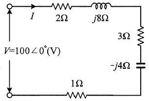
- 7.69+j11.5
- 7.69-j11.5
- 11.5+j7.69
- 11.5-j7.69
(정답률: 38%)
23. 논리식 A・(A+B)를 간단히 하면?
- A
- B
- A・B
- A+B
(정답률: 60%)
24. 저항이 0.1Ω인 도체에 220V의 전압이 가해졌다면, 도체에 흐르는 전류는 몇 kA인가?
- 1.1
- 2.2
- 11
- 22
(정답률: 63%)
25. 공기 중에 50A의 전류가 흐르고 있는 무한 직선 도체로부터 2m 떨어진 곳에서의 자기장세기는 약 몇 AT/m인가?
- 31.84
- 15.92
- 7.96
- 3.98
(정답률: 34%)
26. 자기력선의 성질에 대한 설명으로 틀린 것은?
- 자기력선은 상호 간에 교차한다.
- 자석의 N극에서 시작하여 S극에서 끝난다.
- 자기력선의 밀도는 자계의 세기와 같다.
- 자계의 방향은 자기력선 위의 한 점에서의 접선 방향이다.
(정답률: 52%)
27. 어떤 전압계의측정 범위를 19배로 하려면 배율기의 저항 RM과 전압계의 내부저항 RV의 관계는?
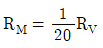
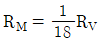
- RM=18RV
- RM=20RV
(정답률: 45%)
28. 교류회로에서 8Ω의 저항과 6Ω의 유도리액턴스가 병렬로 연결되었을 때 역률은?
- 0.4
- 0.5
- 0.6
- 0.8
(정답률: 47%)
29. 회로의 유효전력이 3000W, 무효전력이 4000var이면 피상전력(VA)은?
- 3000
- 4000
- 5000
- 6000
(정답률: 56%)
30. i1(t)=Imsinωt(A)와 i2(t)=Imcosωt(A)가 있다. 두 전류의 위상차는 몇 도 인가?
- 0°
- 30°
- 60°
- 90°
(정답률: 53%)
31. 다이오드를 사용한 정류회로에서 과대한 부하전류에 의하여 다이오드가 파손될 우려가 있을 경우 적당한 대책은?
- 다이오드를 직렬로 추가한다.
- 다이오드를 병렬로 추가한다.
- 다이오드의 양단에 적당한 값의 저항을 추가한다.
- 다이오드의 양단에 적당한 값의 콘덴서를 추가한다.
(정답률: 58%)
32. 5Ω, 10Ω, 25Ω의 저항 3개를 직렬로 접속하고 80V의 전압을 인가하였을 때, 이 회로에 흐르는 전류 I(A)와 각 저항에 걸리는 전압 V5(V), V10(V), V25(V)는 각각 얼마인가?
- I=1A, V5=10V, V10=20V, V25=50V
- I=2A, V5=10V, V10=20V, V25=50V
- I=1A, V5=15V, V10=25V, V25=40V
- I=2A, V5=15V, V10=25V, V25=40V
(정답률: 63%)
33. 변압기의 1차 측 전압이 3000V, 1차 측 권선수가 995회인 변압기의 2차 측 전압이 약 380V인 경우 2차 측 권선수는 몇 회인가?
- 126
- 285
- 570
- 1140
(정답률: 44%)
34. DC 전압을 일정하게 유지하기 위해서 주로 사용되는 다이오드는?
- 쇼트키다이오드
- 터널다이오드
- 제너다이오드
- 버랙터다이오드
(정답률: 69%)
35. 그림과 같은 블록선도의 전달함수 (C(s)/R(s))는?
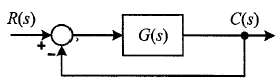
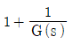
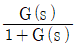
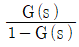
- G(s)
(정답률: 60%)
36. 교류를 직류로 바꿔주는 변환장치는?
- 정류기
- 변압기
- 유도기
- 전동기
(정답률: 63%)
37. 동작신호와 조작량 사이에서 연속적인 관계가 아닌 조절(제어) 동작은?
- 비례 제어
- 비례 미분 제어
- 비례 적분 제어
- 2위치 제어
(정답률: 57%)
38. 논리 게이트 중 두 입력이 1과 0일 때 출력이 1이 아닌 것은?
- NAND 게이트
- OR 게이트
- EXCLUSIVE-OR 게이트
- NOR 게이트
(정답률: 50%)
39. 3상 회로를 2전력계 방법으로 측정하였더니 각각 3kW, 1kW를 지시하였다. 이 회로의 3상 유효전력은 몇 kW인가?
- 1
- 2
- 3
- 4
(정답률: 50%)
40. 온도, 유량, 압력 등의 공업공정의 상태량을 제어량으로 하는 제어시스템으로서 공업공정에 가해지는 외란의 억제를 주목적으로 하는 제어는?
- 프로세스제어
- 프로그램제어
- 서보기구
- 추치제어
(정답률: 60%)
3과목: 소방관계법규
41. 소방기본법령상 동원된 소방력의 운용과 관련하여 필요한 사항을 정하는 자는? (단, 동원된 소방력의 소방활동 수행 과정에서 발생하는 경비 및 동원된 민간 소방 인력이 소방활동을 수행하다가 사망하거나 부상을 입은 경우와 관련된 사항은 제외한다.)
- 대통령
- 소방청장
- 시∙도지사
- 행정안전부장관
(정답률: 50%)
42. 화재예방, 소방시설 설치 및 안전관리에 관한 법령상 특정소방대상물 중 교육연구시설에 포함되지 않은 것은?
- 도서관
- 초등학교
- 직업훈련소
- 자동차운전학원
(정답률: 63%)
43. 소방기본법령상 소방신호의 종류가 아닌 것은?
- 발화신호
- 해제신호
- 훈련신호
- 소화신호
(정답률: 54%)
44. 위험물안전관리법령상 제3류 위험물이 아닌 것은?
- 칼륨
- 황린
- 나트륨
- 마그네슘
(정답률: 48%)
45. 화재예방, 소방시설 설치∙유지 및 안전관리에 관한 법령상 건축허가등을 할때 미리 소방본부장 또는 소방서장의 동의를 받아야 하는 건축물의 범위에 해당하는 것은?
- 연면적이 200m2인 노유자시설 및 수련시설
- 연면적이 300m2인 업무시설로 사용되는 건축물
- 승강기 등 기계장치에 의한 주차시설로서 자동차 10대를 주차할 수 있는 시설
- 차고∙주차장으로 사용되는 층 중 바닥면적이 150m2인 층이 있는 건축물
(정답률: 47%)
46. 화재예방, 소방시설 설치∙유지 및 안전관리에 관한 법령상 특정소방대상물 중 숙박시설의 종류가 아닌 것은?
- 학교 기숙사
- 일반형 숙박시설
- 생활형 숙박시설
- 근린생활시설에 해당하지 않은 고시원
(정답률: 49%)
47. 위험물안전관리법령상 산화성 고체이며 제1류 위험물에 해당하는 것은?
- 칼륨
- 황화린
- 염소산염류
- 유기과산화물
(정답률: 57%)
48. 위험물안전관리법령상 제조소등에 전기설비(전기배선, 조명기구 등은 제외 )가 설치된 장소의 면적이 300m2일경우, 소형수동식소화기는 최소 몇 개 설치하여야 하는가?
- 1개
- 2개
- 3개
- 4개
(정답률: 50%)
49. 소방기본법령상 소방서 종합상황실의 실장이 서면∙모사전송 또는 컴퓨터통신 등으로 소방본부의 종합상황실에 지체 없이 보고하여야 하는 화재의 기준으로 틀린 것은?
- 이재민이 50인 이상 발생한 화재
- 재산피해액이 50억원 이상 발생한 화재
- 층수가 11층 이상인 건축물에서 발생한 화재
- 사망자가 5인 이상 발생하거나 사상자가 10인 이상 발생한 화재
(정답률: 53%)
50. 소방기본법령상 화재경계지구로 지정할 수 있는 대상지역이 아닌 것은? (단, 소방청장∙소방본부장 또는 소방서장이 화재경계지구로 지정할 필요가 있다고 별도로 지정한 지역은 제외한다.)
- 시장지역
- 석조건물이 있는 지역
- 위험물의 저장 및 처리 시설이 밀집한 지역
- 석유화학제품을 생상하는 공장이 있는 지역
(정답률: 62%)
51. 화재예방, 소방시설 설치∙유지 및 안전관리에 관한 법령상 특정소방대상물에 설치되어 소방본부장 또는 소방서장의 건축허가등의 동의대상에서 제외되게 하는 소방시설이 아닌 것은? (단, 설치되는 소방시설은 화재안전기준에 적합하다.)
- 유도표지
- 누전경보기
- 비상조명등
- 인공소생기
(정답률: 42%)
52. 화재예방, 소방시설 설치∙유지 및 안전관리에 관한 법령상 소방시설 관리사의 결격사유가 아닌 것은?
- 피성년후견인
- 소방기본법령에 따른 금고 이상의 실형을 선고받고 그 집행이 면제된 날부터 2년이 지나지 아니 한 사람
- 소방시설공사업법령에 따른 금고 이상의 형의 집행유예를 선고받고 그 유예기간이 지난 후 2년이 지나지 아니한 사람
- 거짓이나 그 밖의 부정한 방법으로 관리사 시험에 합격하여 자격이 취소된 날부터 2년이 지나지 아니한 사람
(정답률: 49%)
53. 소방시설공사업법령상 상주 공사감리의 대상기준 중 다음 괄호 안에 알맞은 것은?
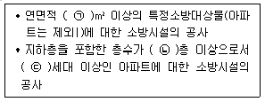
- ㉠ 30000, ㉡ 16, ㉢ 500
- ㉠ 30000, ㉡ 11, ㉢ 300
- ㉠ 50000, ㉡ 16, ㉢ 500
- ㉠ 50000, ㉡ 11, ㉢ 300
(정답률: 40%)
54. 소방기본법령상 국가가 시∙도의 소방업무에 필요한 경비의 일부를 보조하는 국고보조 대상이 아닌 것은?
- 소방자동차 구입
- 소방용수시설 설치
- 소방전용통신설비 설치
- 소방관서용 청사의 건축
(정답률: 56%)
55. 화재예방, 소방시설 설치∙유지 및 안전관리에 관한 법령상 자동화재속보설비를 설치하여야하는 특정소방대상물의 기준으로 틀린 것은? (단, 사림이 24시간 상시 근무하고 있는 경우는 제외한다.)
- 업무시설로서 바닥면적이 1500m2 이상인 층이 있는 것
- 문하 재보호법에 따라 보물 또는 국보로 지정된 목조건축물
- 노유자 생활시설에 해당하지 않는 노유자 시설로서 바닥면적이 300m2 이상인 층이 있는 것
- 수련시설(숙박시설이 있는 건축물만 해당)로서 바닥면적이 500m2 이상인 층이 있는 것
(정답률: 44%)
56. 위험물안전관리법령상 점포에서 위험물을 용기에 담아 판매하기 위하여 지정수량의 40배 이하의 위험물을 취급하는 장소의 취급소 구분으로 옳은 것은? (단, 위험물을 제조외의 목적으로 취급하기 위한 장소이다.)
- 이송취급소
- 일반취급소
- 주유취급소
- 판매취급소
(정답률: 61%)
57. 화재예방, 소방시설 설치∙유지 및 안전관리에 관한 법령상 소방청장 또는 시∙도지사가 청문을 하여야 하는 처분이 아닌 것은?
- 소방시설관리사 자격의 정지
- 소방안전관리자 자격의 취소
- 소방시설관리업의 등록취소
- 소방용품의 형식승인 취소
(정답률: 47%)
58. 소방시설공사업법령상 소방본부장이나 소방서장이 소방시설공사가 공사감리 결과보고서대로 완공되었는지를 현장에서 확인할 수 있는 특정소방대상물이 아닌 것은?
- 판매시설
- 문화 및 집회시설
- 11층이상인 아파트
- 수련시설 및 노유자시설
(정답률: 53%)
59. 화재예방, 소방시설 설치∙유지 및 안전관리에 관한 법령상 시∙도지사는 관리업자에게 영업정지를 명하는 경우로서 그 영업정지가 국민에게 심한 불편을 주거나 그 밖에 공익을 해칠 우려가 있을 때에는 영업정지처분을 갈음하여 최대 얼마 이하의 과징금을 부과할 수 있는가?
- 1000만원
- 2000만원
- 3000만원
- 5000만원
(정답률: 51%)
60. 소방기본법령상 소방대상물에 해당하지 않는 것은?
- 차량
- 건축물
- 운항 중인 선박
- 선박 건조 구조물
(정답률: 68%)
4과목: 소방전기시설의 구조 및 원리
61. 자동화재탐지설비 및 시각경보장치의 화재안전기준(NFSC 203)에 따라 공기관식 차동식 분포형감지기를 설치 시 하나의 검출부분에 접속하는 공기관의 길이는 몇 m 이하로 하여야 하는가?
- 6
- 20
- 50
- 100
(정답률: 41%)
62. 자동화재탐지설비 및 시각경보장치의 화재안전기준(NFSC 203)에 따라 누전경보기 중 1급 누전경보기는 경계전로의 정격전류가 몇 A를 초과하는 전로에 설치하는가?
- 50
- 60
- 100
- 120
(정답률: 50%)
63. 자동화재탐지설비 및 시각경보장치의 화재안전기준(NFSC 203)에 따라 주요구조부가 내화구조로 된 바닥면적 70m2인 특정소방대상물에 설치하는 열전대식 차동식 분포형감지기의 열전대부는 몇 개 이상이어야 하는가?
- 2
- 3
- 4
- 5
(정답률: 39%)
64. 비상방송설비의 화재안전기준으로(NFSC 202)에 따른 비상방송설비의 설치기준으로 옳은 것은?
- 음량조정기를 걸치하는 경우 음량조정기의 배선은 2선식으로 할 것
- 음향장치는 정격전압의 80% 전압에서 음향을 발할 수 있는 것을 할 것
- 조작부의 조작스위치는 바닥으로부터 0.5m이상 1.2m이하의 높이에 설치할 것
- 기동장치에 따른 화재신고를 수신 한 후 필요한 방송이 자동으로 개시될 때까지의 소요시간은 20초 이하로 할 것
(정답률: 56%)
65. 자동화재탐지설비 및 시각경보장치의 화재안전기준(NFSC 203)에 따른 배선의 설치기준이다. 다음 ( )에 들어갈 내용으로 옳은 것은?
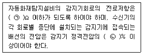
- ㉠ 50, ㉡ 85
- ㉠ 40, ㉡ 80
- ㉠ 40, ㉡ 85
- ㉠ 50, ㉡ 80
(정답률: 60%)
66. 비상콘센트설비의 화재안전기준(NFSC 504)에 따른 비상콘센트설비의 전원회로의 설치기준에 대한 내용이다. 다음 ( )에 들어갈 내용으로 옳은 것은?
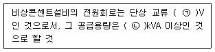
- ㉠ 110, ㉡ 1.5
- ㉠ 110, ㉡ 3.0
- ㉠ 220, ㉡ 1.5
- ㉠ 220, ㉡ 3.0
(정답률: 59%)
67. 무선통신보조설비의 화재안전기준(NFSC 5⑤)에 따른 무선통신보조설비의 누설동축케이 등의 설치기준으로 틀린 것은?
- 누설동축케이블과 이에 접속하는 안테나 또는 동축케이블과 이에 접속하는 안테나로 구성 할 것
- 누설동축케이블은 불연 또는 난연성의 것으로서 온도에 따라 전기의 특성이 변질되지 아니하는 것으로 할 것
- 누설동축케이블 및 안테나는 금속판 등에 따라 전파의 복사 또는 특성이 현저하게 저하되지 아니하는 위치에 설치 할 것
- 소방전용주파수대에서 전파의 소방대 상호간의 무선연락에 지장이 없는 경우에는 다른 용도와 겸용할 수 있다.
(정답률: 32%)
68. 화재안전기준(NFSC)에 따라 소방설비를 유효하게 작동하게 하는 비상전원의 최소 용량이 20분이 아닌 것은? (단, 감시상태의 시간은 제외하고, 지하층, 무창층 및 지하상가가 아닌 경우이다.)
- 층수가 11층 이상인 특정소방대상물의 비상콘센트설비
- 지하층을 제외한 층수가 11층 미만의 층인 특정소방대상물의 유도등
- 지하층을 제외한 층수가 11층 미만의 층인 특정소방대상물의 비상조명등
- 지하층을 제외한 층수가 11층 미만의 층인 특정소방대상물의 비상경보설비
(정답률: 36%)
69. 유도등 및 유도표지의 화재안전기준(NFSC 303)에 따른 객석유도등의 설치장소로 틀린 것은?
- 벽
- 바닥
- 천장
- 통로
(정답률: 65%)
70. 비상경보설비 및 단독경보형감지기의 화재안전기준(NFSC 201)에 따라 비상경보설비를 설치해야 하는 특정소방대상물에 비상벨설비 또는 자동식사이렌설비와 연동하여 작동하는 비상방송설비를 설치한 경우에 면제할 수 있는 것은?
- 발신기
- 수신기
- 감지기
- 지구음향장치
(정답률: 56%)
71. 비상방송설비의 화재안전기준(NFSC 202)에 따른 용어의 정의 중 소리를 크게 하여 멀리까지 전달될 수 있도록 하는 장치는?
- 확성기
- 증폭기
- 변류기
- 음량조절기
(정답률: 57%)
72. 누전경보기의 구성요소로 옳은 것은?
- 변류기, 감지기, 수신부, 차단기구
- 발신기, 변류기, 수신부, 음향장치
- 수신부, 변류기, 중계기, 음향장치
- 음향장치, 수신부, 변류기, 차단기구
(정답률: 45%)
73. 자동화재탐지설비 및 시각경보장치의 화재안전기준(NFSC 203)에 따라 자동화재탐지설비의 감지기회로에 종단저항을 설치하는 주된 목적은?
- 도통시험을 하기 위하여
- 작동시험을 하기 위하여
- 전원상태를 확인하기 위하여
- 작동중인 감지기를 쉽게 확인하기 위하여
(정답률: 64%)
74. 무선통신보조설비의 화재안전기준(NFSC 5⑤)에 따른 무선통신보조설비에서 임피던스 값이 일정하지 않을 경우 반사가 발생하여 노이즈에 의한 통신감도가 떨어지므로 특성임피던스 값을 몇 Ω 으로 정합(Matching)시켜 주어야 하는가?
- 30
- 50
- 75
- 100
(정답률: 56%)
75. 자동화재속보설비의 속보기의 선능인증 및 제품검사의 기술기준에 따른 속보기의 기능에 대한 내용이다. 다음 ( )에 들어갈 내용으로 옳은 것은?
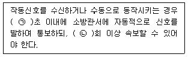
- ㉠ 10, ㉡ 2
- ㉠ 20, ㉡ 2
- ㉠ 10, ㉡ 3
- ㉠ 20, ㉡ 3
(정답률: 50%)
76. 비상조명등의 형식승인 및 제품검사의 기술기준에 따라 사용전원전압의 몇 % 범위안에서는 비상조명등 내부의 온도상승이 그 기능에 지장을 주거나 위해를 발생시킬 염려가 없어야 하는가?
- 80
- 110
- 125
- 140
(정답률: 40%)
77. 비상경보설비 및 단독경보형감지기의 화재안전기준(NFSC 201)에 따른 비상벨설비 또는 자동식사이렌설비의 발신기의 설치기준으로 옳은 것은?
- 조작이 쉬운 장소에 설치하고, 조작스위치는 바닥으로부터 0.5m 이상 1.2m 이하의 높이에 설치할 것
- 특정소방대상물의 층마다 설치하되, 복도 또는 별도로 구획된 실로서 보행거리가 25m 이상일 경우에는 추가로 설치 할 것
- 특정소방대상물의 층마다 설치하되, 해당 특정소방대상물의 각 부분으로부터 하나의 발신기까지의 수평거리가 15m 이하가 되도록 할 것
- 발신기의 위치표시등은 함의 상부에 설치하되, 그 불빛은 부착 면으로 부터 15° 이상의 범위 안에서 부착지점으로부터 10m이내의 어느 곳에서도 쉽게 식별할 수 있는 적색등으로 할 것
(정답률: 47%)
78. 소방시설용 비상전원수전설비의 화재안전기준(NFSC 602)에 따른 특별고압 또는 고압으로 수전하는 비상전원 수전설비의 종류가 아닌 것은?
- 큐비클형
- 옥외개방형
- 내화구조형
- 방화구획형
(정답률: 39%)
79. 유도등 및 유도표지의 화재안전기준(NFSC 303)에 따른 광원점등방식의 피난유도선에 대한 설치기준으로 틀린 것은?(오류 신고가 접수된 문제입니다. 반드시 정답과 해설을 확인하시기 바랍니다.)
- 부착대에 의하여 견고하게 설치할 것
- 수신기로부터의 화재신호 밑 수동조작에 의하여 광원이 점등되도록 설치 할 것
- 피난유도 표시부는 바닥으로부터 높이 1m 이하의 위치 또는 바닥 면에 설치 할 것
- 피난유도 표시부는 50cm 이내의 간격으로 연속되도록 설치하되 실내장식물 등으로 설치가 곤란할 경우 1m 이내로 설치 할 것
(정답률: 38%)
80. 비상콘센트설비의 화재안전기준(NFSC 504)에 따은 용어의 정의로서 틀린 것은?(관련 규정 개정전 문제로 여기서는 기존 정답인 1번을 누르면 정답 처리됩니다. 자세한 내용은 해설을 참고하세요.)
- 교류 620V는 저압이다.
- 교류 440V는 저압이다.
- 직류 740V는 저압이다.
- 교류 6600V는 고압이다.
(정답률: 60%)